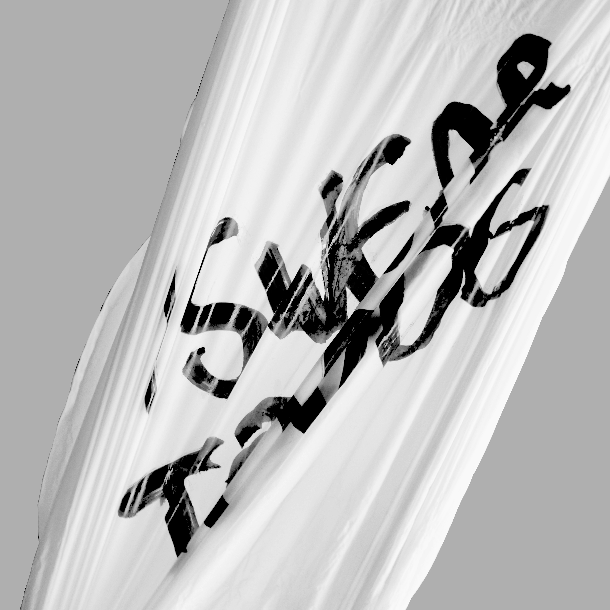
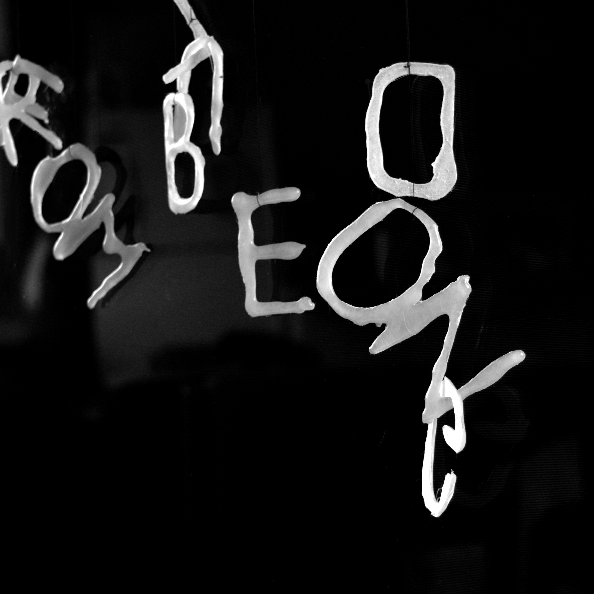
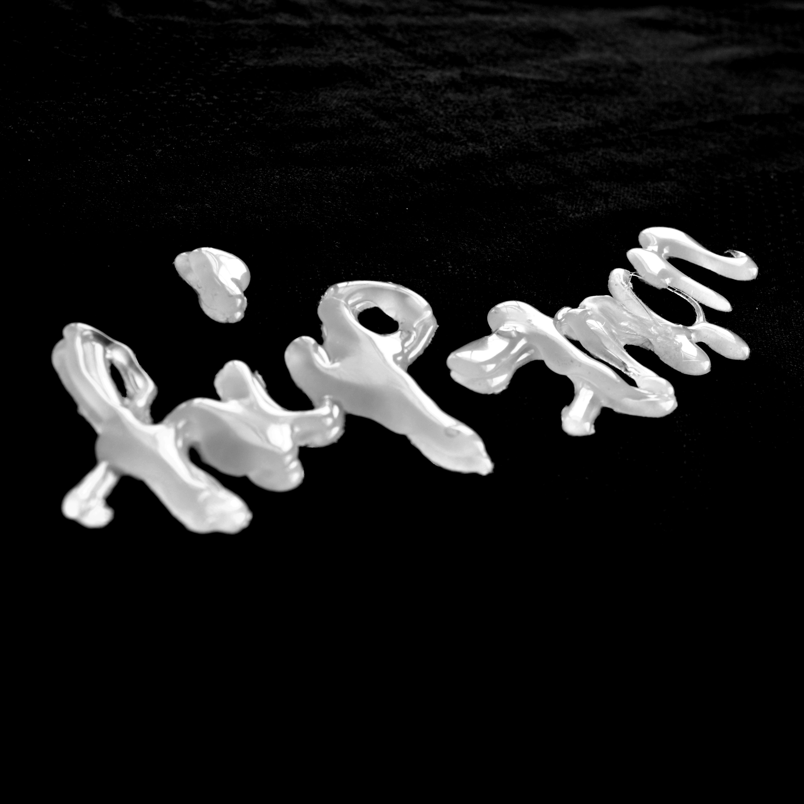
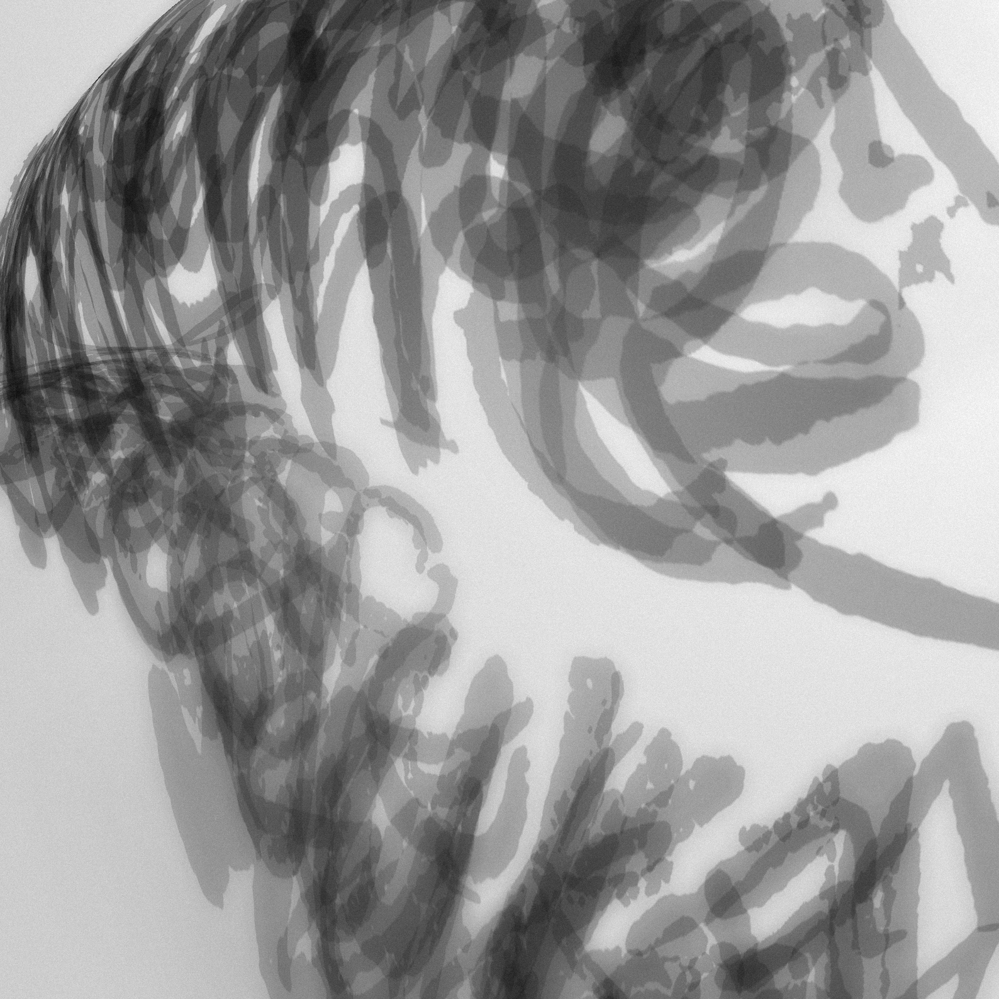
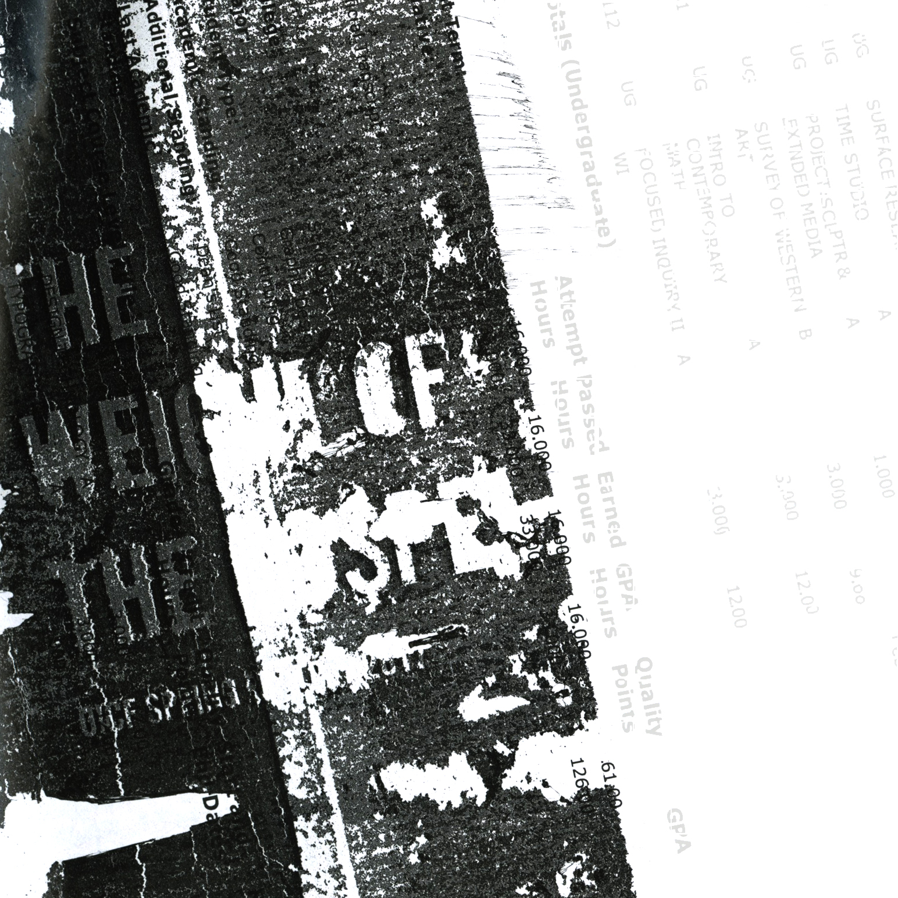
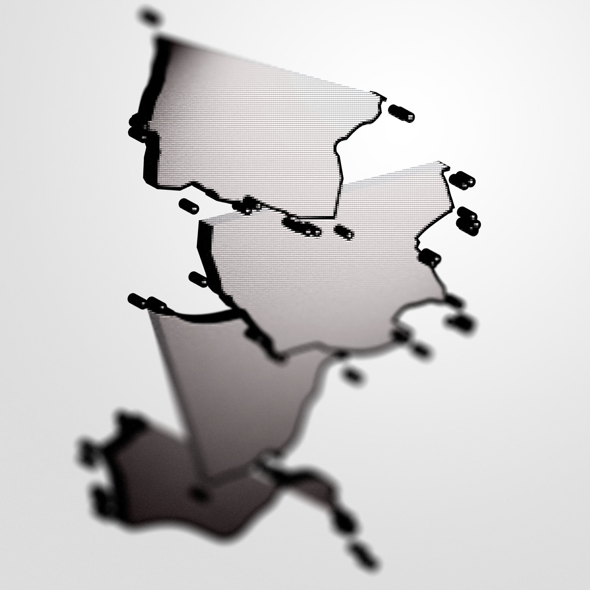

-
 01. 'i swear to dog'
from "do you swear to god? i swear to dog." balloon balloon and spirituality.
-
 02. 'from blue dong'
i don't know the context either.
heated, gunned, spritzed, cooled, washed, dried, hung ( ͡° ͜ʖ ͡°).
-

03. 'hÔLY SHỊt'
you probably can't read this if you're not viet. i will be considerate and generous and provide translation and context: it says holy shit.
-
 04. ‘húp trọn’ in cursive
loose translation for "vore" (vorarephilia). a tribute to my vorey friends.
free-hand glue gunning, stuck on a scarf. yum.
-
 05. ‘memê sasukê’
We pass a sasukê around and got 13 people to memê him.
You know sasukê has layers, like an onion, like an ogre.
-

06. '>:3c INTENSIFIES'
a tribute to my furry friends.
the text was processed through pix2pix cat generator for a change in volume; the new image was then printed and used as a template for a glue pattern on glass. one (1) plastic bag was then glued on the glass accordingly, and a thin layer of water was poured in top. the final documentation shows the color inverted.
-
 07. if you can read this it's too late
i'm "cleaning" my roommate's printer with my academic transcript.
xoxoxo
-
08. 'tequila yoda'
tequila in, dicks out.
-

09. yiff dot gif
another one for the furries because i have too many furry friends. honestly, what is going on. why are you guys all furries.
-
 10. 'succ'
a map to a succ outta this world. sponsored by google maps, illustrator, and photoshop in that order.